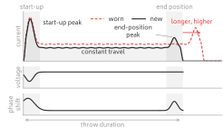

Rail
Railway points
Every throw of a point machine leaves a power fingerprint. WITNESS reads it and tells you the remaining life.
Condition-based instead of fixed-interval maintenance for point machines with asynchronous motors: an early warning before a throw fails, and replacements you can plan.

skAInet PowerProbe for pointsMeasures only the electric and magnetic field: galvanically isolated and non-reactive. Designed to avoid re-approval. Trialled with DB Netze in DIANA.
- Detects icing, stiffness, contamination, missing lubrication, end-position problems, gearbox wear and bearing damage
- Remaining life in throws and days, traffic-light status
DB Netze DIANA · 40,000+ point machines monitored